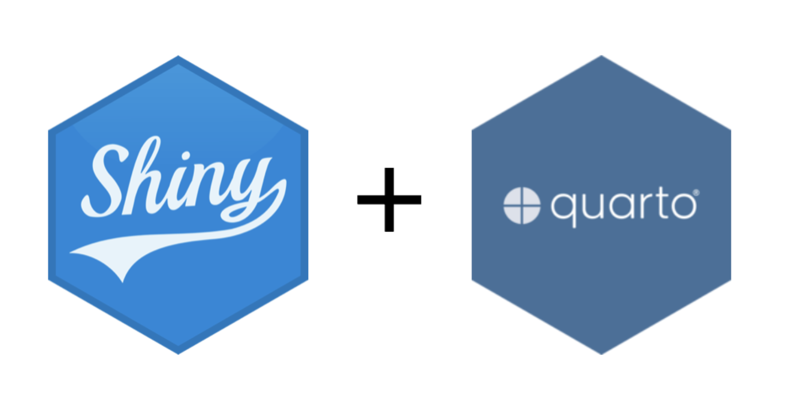
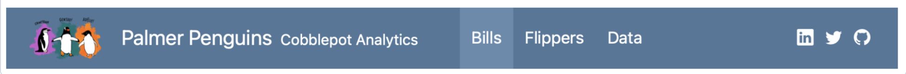

| mpg | cyl | disp | hp | drat | wt | qsec | vs | am | gear | carb | |
|---|---|---|---|---|---|---|---|---|---|---|---|
| Mazda RX4 | 21.0 | 6 | 160.0 | 110 | 3.90 | 2.620 | 16.46 | 0 | 1 | 4 | 4 |
| Mazda RX4 Wag | 21.0 | 6 | 160.0 | 110 | 3.90 | 2.875 | 17.02 | 0 | 1 | 4 | 4 |
| Datsun 710 | 22.8 | 4 | 108.0 | 93 | 3.85 | 2.320 | 18.61 | 1 | 1 | 4 | 1 |
| Hornet 4 Drive | 21.4 | 6 | 258.0 | 110 | 3.08 | 3.215 | 19.44 | 1 | 0 | 3 | 1 |
| Hornet Sportabout | 18.7 | 8 | 360.0 | 175 | 3.15 | 3.440 | 17.02 | 0 | 0 | 3 | 2 |
| Valiant | 18.1 | 6 | 225.0 | 105 | 2.76 | 3.460 | 20.22 | 1 | 0 | 3 | 1 |
| Duster 360 | 14.3 | 8 | 360.0 | 245 | 3.21 | 3.570 | 15.84 | 0 | 0 | 3 | 4 |
| Merc 240D | 24.4 | 4 | 146.7 | 62 | 3.69 | 3.190 | 20.00 | 1 | 0 | 4 | 2 |
| Merc 230 | 22.8 | 4 | 140.8 | 95 | 3.92 | 3.150 | 22.90 | 1 | 0 | 4 | 2 |
| Merc 280 | 19.2 | 6 | 167.6 | 123 | 3.92 | 3.440 | 18.30 | 1 | 0 | 4 | 4 |
| Merc 280C | 17.8 | 6 | 167.6 | 123 | 3.92 | 3.440 | 18.90 | 1 | 0 | 4 | 4 |
| Merc 450SE | 16.4 | 8 | 275.8 | 180 | 3.07 | 4.070 | 17.40 | 0 | 0 | 3 | 3 |
| Merc 450SL | 17.3 | 8 | 275.8 | 180 | 3.07 | 3.730 | 17.60 | 0 | 0 | 3 | 3 |
| Merc 450SLC | 15.2 | 8 | 275.8 | 180 | 3.07 | 3.780 | 18.00 | 0 | 0 | 3 | 3 |
| Cadillac Fleetwood | 10.4 | 8 | 472.0 | 205 | 2.93 | 5.250 | 17.98 | 0 | 0 | 3 | 4 |
| Lincoln Continental | 10.4 | 8 | 460.0 | 215 | 3.00 | 5.424 | 17.82 | 0 | 0 | 3 | 4 |
| Chrysler Imperial | 14.7 | 8 | 440.0 | 230 | 3.23 | 5.345 | 17.42 | 0 | 0 | 3 | 4 |
| Fiat 128 | 32.4 | 4 | 78.7 | 66 | 4.08 | 2.200 | 19.47 | 1 | 1 | 4 | 1 |
| Honda Civic | 30.4 | 4 | 75.7 | 52 | 4.93 | 1.615 | 18.52 | 1 | 1 | 4 | 2 |
| Toyota Corolla | 33.9 | 4 | 71.1 | 65 | 4.22 | 1.835 | 19.90 | 1 | 1 | 4 | 1 |
| Toyota Corona | 21.5 | 4 | 120.1 | 97 | 3.70 | 2.465 | 20.01 | 1 | 0 | 3 | 1 |
| Dodge Challenger | 15.5 | 8 | 318.0 | 150 | 2.76 | 3.520 | 16.87 | 0 | 0 | 3 | 2 |
| AMC Javelin | 15.2 | 8 | 304.0 | 150 | 3.15 | 3.435 | 17.30 | 0 | 0 | 3 | 2 |
| Camaro Z28 | 13.3 | 8 | 350.0 | 245 | 3.73 | 3.840 | 15.41 | 0 | 0 | 3 | 4 |
| Pontiac Firebird | 19.2 | 8 | 400.0 | 175 | 3.08 | 3.845 | 17.05 | 0 | 0 | 3 | 2 |
| Fiat X1-9 | 27.3 | 4 | 79.0 | 66 | 4.08 | 1.935 | 18.90 | 1 | 1 | 4 | 1 |
| Porsche 914-2 | 26.0 | 4 | 120.3 | 91 | 4.43 | 2.140 | 16.70 | 0 | 1 | 5 | 2 |
| Lotus Europa | 30.4 | 4 | 95.1 | 113 | 3.77 | 1.513 | 16.90 | 1 | 1 | 5 | 2 |
| Ford Pantera L | 15.8 | 8 | 351.0 | 264 | 4.22 | 3.170 | 14.50 | 0 | 1 | 5 | 4 |
| Ferrari Dino | 19.7 | 6 | 145.0 | 175 | 3.62 | 2.770 | 15.50 | 0 | 1 | 5 | 6 |
| Maserati Bora | 15.0 | 8 | 301.0 | 335 | 3.54 | 3.570 | 14.60 | 0 | 1 | 5 | 8 |
| Volvo 142E | 21.4 | 4 | 121.0 | 109 | 4.11 | 2.780 | 18.60 | 1 | 1 | 4 | 2 |
Lab 8
Quarto Dashboards
STAT 133
Agenda
- Overview: Dashboards
- Demo Dashboard
- 7th Quarto Publication
Data Dashboards
A Data Dashboard is an interactive display of selected statistics and plots to allow the user to quickly monitor, explore, and understand patterns in data.
Used for:
- Real-time Monitoring
- Data Exploration
Tools for Dashboards

Anatomy of a Dashboard
Navbar

---
title: "Palmer Penguins"
author: "Cobblepot Analytics"
format:
dashboard:
logo: images/penguins.png
nav-buttons: [linkedin, twitter, github]
---https://quarto.org/docs/reference/projects/websites.html#nav-items
Layout
- Define new row with
## Row, new column with## Column - Nest one inside the other using
###for child (e.g.### Column) - Defaults to row-by-row layout. Change by using
Layout by row
Layout by column
Data Display
Plots
You can insert graphics from ggplot, base R, or an interactive library. It can be helpful to tweak fig-width and fig-height.
Tables
- Static table:
gt::gt,knitr::kable(). - Interactive table:
DT::datatable()
kable()
datatable()
Value boxes
You can create a dynamic value box using the following.
Let’s Try it Out!
Links:
Documentation: https://quarto.org/docs/dashboards/
Demo Dashboard: Log into Bcourses and find the .qmd under Assignments > Pub7
Note: Many examples in the Quarto documentation use Python, but the same dashboard structure applies when using R. Focus on the layout and components rather than the language.
Your turn
- Try to render the demo-dashboard.qmd. What do you see?
Note: You may need to use
install.packages("")to load packages such asgt,leaflet,sf,httr2, andshinyinto your session.
02:30
Your turn
- Add four empty cards to your document by adding inserting four blank code cells at the bottom.
- Arrange them in a 2 x 2 grid layout.
02:30
Your Turn
Display the data on earthquakes in your dashboard by putting 4 elements into panels:
recent_quakes: Table of recent quakesn_24: Summary statistics (How many quakes were there in the last 24 hours?)quake_map: Map graphicmag_hist: Quake histogramtimeline: Timeline of recent quakestop_n_table: Recent quakes table
06:00
Publication 7
Now you will create your own dashboard document with:
A research question you want to explore
Build a dashboard explaining a pattern in the data
Include 4 elements: a research question, a graph, a table, a value box, and a report summary
Open a new qmd file
Copy the YAML header of the demo dashboard to your qmd file.
Choose a Research Question and Create Elements
Choose a dataset (from baseR or tidyverse) to visualize a trend in the data with. Possible examples:
airquality: How do temperature and ozone levels relate during summer months?mpg: How does vehicle class affect highway fuel economy?iris: Do petal measurements vary more across species than sepal measurements?
Submission to BCourses
Submit the Netlify URL (link) of your published document to the corresponding assignment in bCourses.
See Assignments tab > Quarto Publications > Pub7
Problem Set 7
Pset 7
Available in bCourses:
See Assignments tab > Problem Sets > PS7
You’ll find 2 files:
ps7.html: instructionsps7.qmd: template file to write your answers
In case of trouble: Go to Files tab, folder problem-sets, folder ps7, and download the qmd file.
Sometimes Safari blocks or denies you access. If this is the case you may want to use another browser (e.g. Chrome).
Pset 7 Submission
- Submit your
qmdandhtmlfiles to bCourses. - Use assignment problem set ps5
- Graded credit / no-credit
- Credit for evidence of earnest engagement (just don’t submit a blank or empty template file)